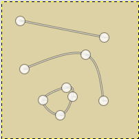
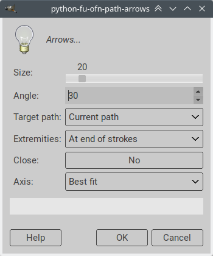
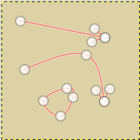
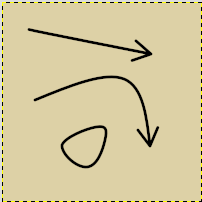

This script adds arrowheads at the end of open path strokes.

Decorate > Add arrow heads.


Size: The length (in pixels) of the arrow wings.Angle: The angle of the arrow wings with the axis of the arrow head. The angle between the arrow wings is therefore twice this angle.
Using a 90° angle produces a straight segment perpendicular to the line (but best use the Tangent option below)Target path: Wether the arrow heads are added in the current path, or added to a new separate path.Extremities: The extremities of the strokes that should receive an arrow head. Some path transformations can swap strokes end to end and result in an arrow head that doesn’t show up where expected. I also have scripts to swap strokes around.Close: If ‘yes’, the arrow head will be a triangle usable for selection and fill. This best used with a new pathAxis: Tangent sets the axis of the arrow head to the exact tangent to the curve on the ending point of the stroke, while Best fit adjusts this axis to make the arrow head look a bit more natural.